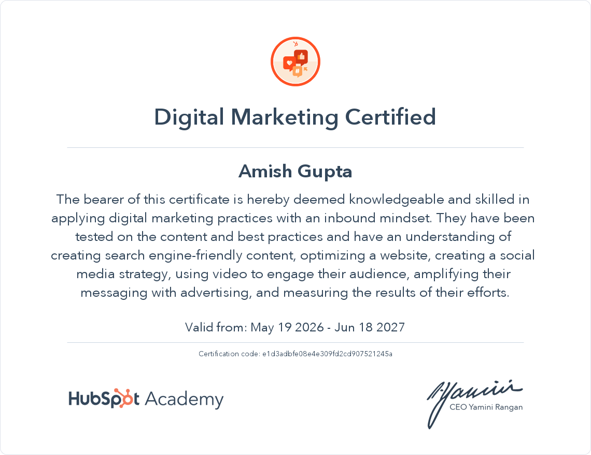
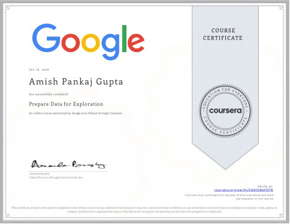
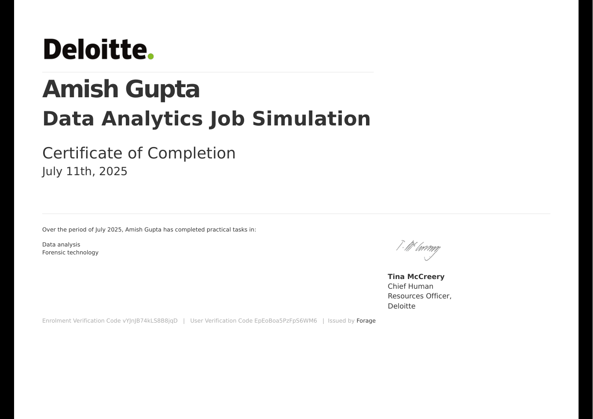
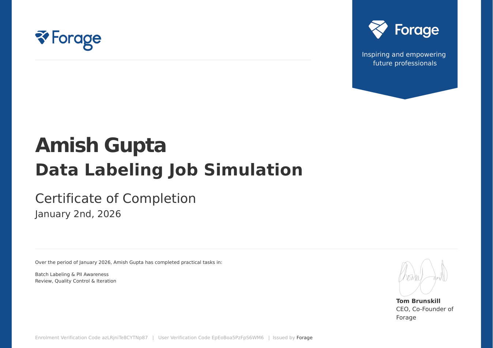

MISSION
To combine marketing thinking, analytical problem-solving, and digital skills to create practical strategies that address real business challenges.
BBA Student · Social Media Marketing · Digital Marketing · Marketing Analytics
Amish Gupta is a second-year BBA student at Somaiya Vidyavihar University focused on Social Media Marketing, Digital Marketing and Product Marketing, with supporting skills in Marketing Analytics. He enjoys understanding audiences, translating brand ideas into content, researching competitors and trends, and thinking about how creative communication can support real business objectives. His experience spans social media content, SEO, competitor research, content planning and performance-focused marketing.
ABOUT ME
Second-year BBA student at Somaiya Vidyavihar University focused on Social Media Marketing, Digital Marketing and Product Marketing.
Amish Gupta is a second-year BBA student with practical exposure to Social Media Marketing, Digital Marketing and Marketing Analytics.
His work focuses on audience understanding, content strategy, competitor research, SEO, brand positioning, creative communication and using performance data to support better marketing decisions.
To combine marketing thinking, analytical problem-solving, and digital skills to create practical strategies that address real business challenges.
To build a career at the intersection of Digital Marketing, Product Marketing, and Analytics, contributing to data-informed growth and stronger customer-focused products.
WORK EXPERIENCE
UPTRUE DIGITAL MARKETING FELLOWSHIP
PULCHRA
SOMAIYA BUSINESS CLUB
EDUCATION
SOMAIYA VIDYAVIHAR UNIVERSITY
SELECTED PROJECTS
MARKET OPPORTUNITY
Developed a structured marketing and product strategy project focused on identifying a market opportunity and understanding its potential. The project covered product architecture and pricing, segmentation-targeting-positioning, buyer persona development, launch planning, and risk mitigation.
BUSINESS DATA ANALYTICS
Analyzed the Chinook Music Store database to uncover business insights from a real-world music store dataset. The project covered the complete analytics flow, from understanding the database structure and schema to writing SQL queries, analyzing customer behavior and sales trends, and translating the data into actionable business insights.
SKILLS
Core capabilities drawn from my CV and practical work. These represent areas I am actively developing through projects and experience.
TOOLS & PLATFORMS
A balanced toolkit across social media, content creation, research and analytics, reflecting the skills listed in my CVs.

Used to create Instagram posts, promotional creatives, Reel covers, carousels and marketing visuals.
Practical Experience
Social media management and planning tool included in my social media marketing toolkit.
Working Knowledge
Used for trend awareness, search-interest research and understanding audience interests.
Practical Experience
Used for data organization, calculations, tracking and basic marketing-performance analysis.
Practical Experience
Interactive dashboards and data visualization for turning structured data into business insights.
Working Knowledge
SQL-based querying and data analysis for exploring structured datasets and extracting business insights.
Working KnowledgeA mixed toolkit across social media, creative production, research and analytics.
CERTIFICATIONS

Knowledge of digital marketing practices including search-friendly content, website optimization, social media strategy, video engagement, advertising, and measuring marketing results.
COMPLETED · VALID MAY 19, 2026 — JUN 18, 2027
Course certificate demonstrating completion of the supplied Google/Coursera data exploration credential.
COMPLETED
Completed practical tasks in data analysis and forensic technology.
COMPLETED · JULY 11, 2025
Completed practical tasks in batch labeling, PII awareness, review, quality control and iteration.
COMPLETED · JANUARY 2, 2026CONTACT